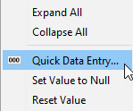
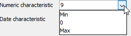

Entering data using the Quick Data Entry
Within the Tree View Tab the Quick Data Entry dialog can be used to help users to enter Input data quickly. When a user selects a number of characteristics, group level characteristics, or any combinations of these, they can use the Quick Data Entry dialog to set the data that they wish to be assigned to any child characteristic or Logical Data Models or corresponding characteristic(s).
| The Quick Data Entry dialog can be used in the Table View, but it cannot be used to populate data in multiple characteristics. |
|
Some examples of when the Quick Data Entry dialog can be used include:
|
To enter data using the Quick Data Entry dialog
There are two ways to access the Quick Data Entry dialog.
- With Interactive Tester open and the Tree View Tab selected.
- Within the Input area, select the characteristic(s) or group level characteristic(s) where you wish data to be entered.
- Either right click and select Quick Data Entry from the context menu or select the Quick Data Entry
 icon from the toolbar.
icon from the toolbar.
The Quick Data Entry dialog will open. - Type the value you wish to be assigned to all the String characteristics in the String characteristic field.
- Either type the value you wish to be assigned to all the Numeric characteristics in the Numeric characteristic field or click on the drop down menu and choose a value:

If the characteristic length is 10 with a scale of 2 then:
min value will be -99999999.99
max value will be 99999999.99
- Either type the date you require in the Date characteristic field or select the Date Picker icon and choose the date required

{kind=link}
{kind=link}
{kind=link}
{kind=link}
| The date will be displayed in the format set in the Global Settings Date Format field, defined in the Properties window of Interactive Tester. |
- Select the Apply to selection only check box as required.
Apply to selection only check box rules:
- Selected - values will only be entered into the selected characteristics and into the child characteristics of a selected group characteristic
- Not selected - values will entered into all the characteristics located in the Input area below the selected characteristic
- Select the Overwrite existing data check box as required.
Selecting this check box will overwrite existing data without providing the user with a warning message.
Should you wish to revert back to the original state of the input data, right click and select Reset Value. All the values will be reset. - Next to the String characteristic field, click Set.
- Next to the Numeric characteristic field, click Set.
- If a date has been selected, next to the Date characteristic field, click Set.
- Click Close.
The Quick Data Entry dialog will close and the data will be assigned to all the required Input characteristics.